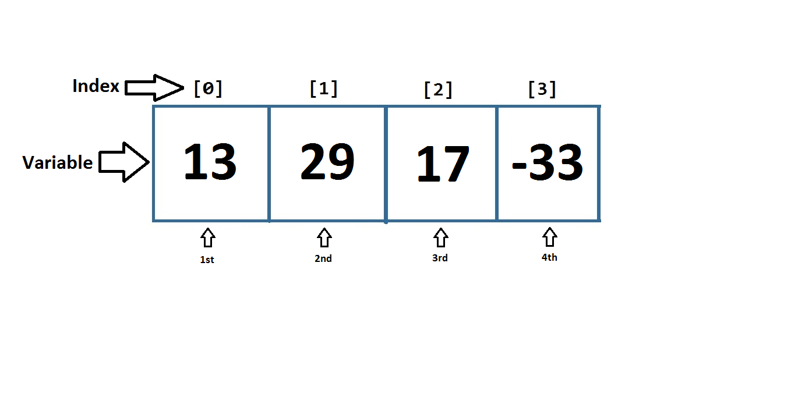

Arrays and Loops
Introduction:
From the Variables Tutorial, we created a program where a single LED on a circuit could be controlled by a button; but what if we wanted to have 4 LED’s in the circuit controlled by 4 buttons? If we followed the structure of the previous program and duplicated it for 4 LED’s, we would end up repeating our code 4 times! So how can we change our program so that adding LED’s in the circuit would require less changes in the code?
Arrays:
Arrays is the answer: an array is a list of variables. If a variable is a single box that holds information, an array is a line of boxes where each box contains the same type of information. For example, an array of integers can only have integer variables. The boxes are lined up so that if you try to get the first variable in the array, you are looking inside the first box in the line. Here is a visualization of an array:
You can declare an array with a certain size; the size is fixed thereafter. You declare an array by following this format:
Type_of_variables_in_array Name_of_array [size_of_array];
You put the type of variable first, then the name of the array, then an opening square bracket, then the size of the array, then the closing bracket and semicolon.
So if I wanted to declare an array that can hold up to 5 boolean variables, and I wanted to call the array my_array, I would type:
boolean my_array[5]; //I created an array that can hold 5 boolean variables When you create an array, this way, the program allocates the space needed to hold those variables and assigns all variables in the array a default value. The default value depends on which type of variable is stored in the array. Here is a quick summary of default values for commonly used types:
| Type of Variable | Default Value |
|---|---|
| int, float, double, long | 0 |
| boolean | false |
Using the table above, this means that my_array actually holds 5 “false” values by default.
You can also initialize variables inside the array when declaring the array:
Type_of_variables_in_array Name_of_array[] = {size_of_array};
So if I wanted to declare an array called my_array, that contains integers, and holds the values:
13, 29, 17, -33, in that order, I would type:
int my_array[] = {13, 29, 17, -33}; //1st = 13, 2nd = 29, 3rd = 17, 4th = -33In order to access an variable in the array, you must tell the array the position of the variable. This position is called an index. Indexes start at 0; for example, to get the first variable in the array, your index is 0, to get the second variable in the array, your index is 1, and so on.
To access a variable in the array, you would type:
Name_of_array = [index];By typing this, you are referring to the variable in the array at the specified index. You can read or set this variable by following that format.
After declaring an array like this:
int my_array[] = {13, 29, 17, -33};To set the third variable (index = 2) in the array, “my_array”, to the value of 5, you would type:
my_array [2] = 5;“my_array” would now hold the values 13, 29, 5, -33
If I wanted to print the third variable (index = 2) in the array “my_array” to the Serial Monitor:
Serial.println(my_array[2]); When you run the program, “my_array[2]” would retrieve the third variable; once the value of the variable is retrieved, this is the result:
Serial.println(5); The monitor would now read → 5
Applications of Arrays and Loops:
So now that we know how to create an array, we can loop through all the variables in the array with a for loop.
Here is what it looks like:
for(int i = 0; i < 5; i++){
//do something while the condition “i < 5” is met
}
Let’s look at the for loop more closely:
for(int i = 0; i < 5; i++){
//do code here
Serial.println(“variable i : “ + i); //print value of i
}
A for loop repeats code inside a set of curly braces until a certain condition is met. The for loop cycles like this:
1)Do the line of code in the first section of the for loop (orange)
2)Check if the condition is met (yellow). If so, continue to step 3. Otherwise, exit for loop.
3)Run the code in between the curly braces I.e. between “ { “ and “ } “
4)Execute the line of code in the third section (green) of the for loop
5)Go to step 2
The red part is the word “for” which indicates that the for statement begins; it is followed by an opening bracket, signalling that the next 3 parts of the for loop will be located between the opening and closing brackets. These 3 parts are separated by semicolons. I.e. “ for (part1; part2; part3) “
The first part (orange), you can write a line of code; this line will execute once before the for loop begins. This part is usually used to declare a variable and assign it a value. In this case, the integer variable “i” is declared and given a value of 0.
The second part (yellow) is the condition that is checked each time in the loop. This condition can be understood as a boolean variable; if the condition is true, the code in between the curly braces is executed and the for loop repeats; otherwise, we exit the for loop. In this case, the loop will continue to repeat while “i” has a value that is less than 5.
The last part (green) is what occurs after the curly bracketed code is executed. This code can be anything but is usually used to increment a variable; in this case, the variable “i” is incremented each time the for loop completes.
Looking at the code, we can now tell that the for loop will repeat 5 times; any code located in between the curly braces will be repeated 5 times. The Serial Monitor would output:
variable i : 0
variable i : 1
variable i : 2
variable i : 3
variable i : 4
We can see that the variable “i” can now act as an index for an array with 5 variables; the for loop would repeat until it has the value of 4, reaching the fifth position in an array. This means that if we alter the second part of the for loop (the condition), we can have the variable “i” act as an index for an array of any size. I.e. if the size of the array was 10, the condition would be “i < 10” so that the variable “i” will increment until it reaches 9, the last index of an array with 10 variables.
For example, this code:
int my_array[] = {13, 29, 17, -33};
int my_array_size = 4;
for(int i = 0; i < my_array_size; i++){
Serial.println(my_array[i]); //print all variables in my_array
}
Would print this to the Serial Monitor:
13
29
17
-33 Implementation of Arrays:
So now we want to implement arrays and for loops into the previous tutorial so that we can easily extend our code so it works for any number of LED’s and buttons. Instead of using integer variables to hold the button and LED pin numbers, we will use integer arrays so we can hold any number of buttons and pins. The first part of the code will look like this:
int number_of_buttons = 4; //Assign this variable the number of buttons you are using.
//This variable is used to initialize the boolean arrays below AND is used in the for loop.
int button_pins[] = {3, 5, 7, 9}; //the first pin number in button_pins[] controls the
//first pin number in LED_pins[], the 2nd pin number in button_pins[] controls to the
//2nd pin number in LED_pins[], etc.
int LED_pins[] = {2, 4, 6, 8};
Using this array declaration, we create an array for button pins and an array for LED pins. This will state that pins 3, 5, 7, 9 are connected to buttons and pins 2, 4, 6, 8 are connected to LED’s. We also want to have a variable that will tell us the number of buttons we are using in the circuit as well; in this case, there are 4 button/LED pairs. This variable will be used later on in the code. Once we finish writing the rest of the program, we will only need to modify this section of code if we want to change the number of LED’s and buttons (I.e. you only have to change these 3 variables: number_of_buttons, button_pins and LED_pins).
The order of the pin numbers in these arrays will determine which button is in control of which LED. For example, if we use the code above, the button connected to pin 3 will control the LED connected to pin 2. Similarly, the button connected to pin 5 will control the LED connected to pin 4, and so on.
Next, we will create arrays to hold the current and previous state of the buttons like in the last tutorial:
//These arrays hold the same information as the tutorial
boolean is_LED_on[number_of_buttons];
boolean is_button_down[number_of_buttons];
boolean previous_is_button_down[number_of_buttons];
Here we declare the boolean arrays is_LED_on, is_button_down, and previous_is_button_down. These arrays are initialized to have a size that is equal to the number of buttons used in the circuit because for each button, we need to know if it is currently pressed down, if it was pressed down in the previous state, and if the LED is currently turned on. You can start to see that the main logic from the Variables Tutorial is retained in this Arrays Tutorial; the only difference is that we are now using arrays instead of variables to hold information.
Now that we have declared all the necessary variables, we will now setup the pin modes in setup with the help of a for loop:
//the setup routine runs once when you press reset:
void setup() {
for(int i = 0; i < number_of_buttons; i++){ //loop through all the buttons and led pins
int button_pin = button_pins[i];
pinMode(button_pin, INPUT); //set all button pins as inputs
int LED_pin = LED_pins[i];
pinMode(LED_pin, OUTPUT); //set all LED pins as outputs
}
}
Since we are holding all of our button and LED pins in an array, we have to loop through the array and access all of the pins and then set them as inputs or outputs:
for(int i = 0; i < number_of_buttons; i++){ //loop through all the buttons and led pinsIn order to loop through all the buttons, we declare a variable called “i” in the first part of the for loop and give it a value of 0. We will use this variable as the index for the array.
We set the condition “i < number_of_pins” in the second part so that we repeat the lines of code in between the curly braces until the index reaches the number of pins (which is also the end of the array).
In the third part of the for loop, we state that the variable “i” (the index) will be incremented by 1 each time the for loop repeats. This allows the variable “i” to go through values 0, 1, 2, 3… until it is equal to number_of_pins.
Now that we have a variable, “i”, that can act as an index for the arrays, we want to go through all the LED and button pins to set them as input/output:
int button_pin = button_pins[i];
pinMode(button_pin, INPUT); //set all button pins as inputs
int LED_pin = LED_pins[i];
pinMode(LED_pin, OUTPUT); //set all LED pins as outputs
Inside the for loop’s curly braces, we retrieve the variable at the “i” position in the button_pins array and store it inside an integer variable called button_pin. We then set the pinMode of button_pin as an input like we did in the Variables Tutorial. Similarly, we do the same thing for LED_pins, placing the pin number inside a variable called LED_pin and then setting the pinMode as an output. Once the for loop completes, all the pin numbers inside the button_pins array should now be set as “INPUT” and all the pin numbers inside the LED_pins array should now be set as “OUTPUT”.
Now that we have completed the setup portion of the program, we will move onto the main loop of the program:
void loop() {
for(int i = 0; i < number_of_buttons; i++){ //loop through all the buttons
if(digitalRead(button_pins[i]) == HIGH){ //check if the button is currently pressed down
is_button_down[i] = true;
}
else{
is_button_down[i] = false;
}
if(previous_is_button_down[i] != is_button_down[i]){ //toggle the light on/off ONLY when the button is FIRST pressed down
if(is_button_down[i]){
is_LED_on[i] = !is_LED_on[i]; //toggle the LED now
}
}
previous_is_button_down[i] = is_button_down[i];
//HIGH means that the pin on the Arduino has current going through
//LOW means that the pin on the Arduino does not have current going through
if(is_LED_on[i]){
digitalWrite(LED_pins[i], HIGH); //output a high voltage through the LED pin
}
else{
digitalWrite(LED_pins[i], LOW);
}
}
}
So inside of the loop() function, we will place a for loop that will go through all the button and LED pins, updating the state of the variables and LED’s.
The for loop used here is identical to the for loop used in the setup function:
for(int i = 0; i < number_of_buttons; i++){ We can tell that the code inside the curly braces will be able to use the variable “i” as an index for the button_pins and LED_pins array.
If you compare the code inside the curly braces to the code you wrote in the Variables Tutorial, you should note that they are both very similar because all the logic stays the same; the main difference is that you are retrieving and setting variables through arrays.
If you think about the index variable “i” and how it is used in the for loop, you can figure out why the order of the pin numbers in button_pins and LED_pins determines which button controls which LED.
End Result:
The code should finally look like this:
/*
This program turns a light on/off when it detects a button being pressed (the button toggles the light).
This program works with any number of buttons/LED's.
*/
int number_of_buttons = 4; //VERY IMPORTANT => MUST HAVE CORRECT NUMBER of buttons here. This variable is used to initialize the boolean arrays below AND is used in the "for loop"
int button_pins[] = {3, 5, 7, 9}; //the first pin number in button_pins[] controls the first pin number in LED_pins[], the 2nd pin number in button_pins[] controls to the 2nd pin number in LED_pins[], etc.
int LED_pins[] = {2, 4, 6, 8};
boolean is_LED_on[number_of_buttons]; //These arrays hold the same information as the tutorial on variables ("Variables Tutorial")
boolean is_button_down[number_of_buttons];
boolean previous_is_button_down[number_of_buttons];
// the setup routine runs once when you press reset:
void setup() {
for(int i = 0; i < number_of_buttons; i++){ //loop through all the buttons and led pins
int button_pin = button_pins[i];
pinMode(button_pin, INPUT); //set all button pins as inputs
int LED_pin = LED_pins[i];
pinMode(LED_pin, OUTPUT); //set all LED pins as outputs
}
}
// the loop routine runs over and over again forever:
void loop() {
for(int i = 0; i < number_of_buttons; i++){ //loop through all the buttons
if(digitalRead(button_pins[i]) == HIGH){ //check if the button is currently pressed down
is_button_down[i] = true;
}
else{
is_button_down[i] = false;
}
if(previous_is_button_down[i] != is_button_down[i]){ //toggle the light on/off ONLY when the button is FIRST pressed down
if(is_button_down[i]){
is_LED_on[i] = !is_LED_on[i]; //toggle the LED now
}
}
previous_is_button_down[i] = is_button_down[i];
//HIGH means that the pin on the Arduino has current going through
//LOW means that the pin on the Arduino does not have current going through
if(is_LED_on[i]){
digitalWrite(LED_pins[i], HIGH); //output a high voltage through the LED pin
}
else{
digitalWrite(LED_pins[i], LOW);
}
}
}Related: Arrays Hardware Tutorial